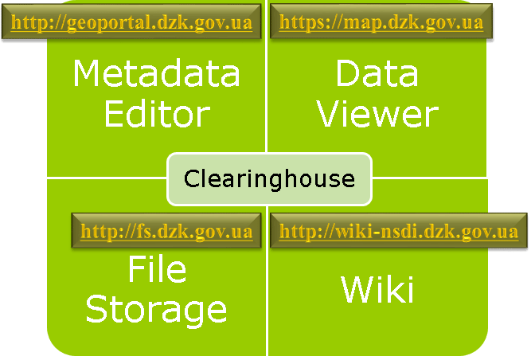

ЗАГАЛЬНА IНФОРМАЦIЯ ПРО КАТАЛОГ МЕТАДАНИХ Clearinghouse Каталог геопросторових даних Програмний комплекс |
|||
Каталог метаданих НIГД збереження редагування публiкацiя |
 | Портал геопросторових даних iнтерактивна карта | |
Файлове сховище даних НIГД збереження завантаження | Вiкiпедiя НIГД довiдкова iнформацiя | ||